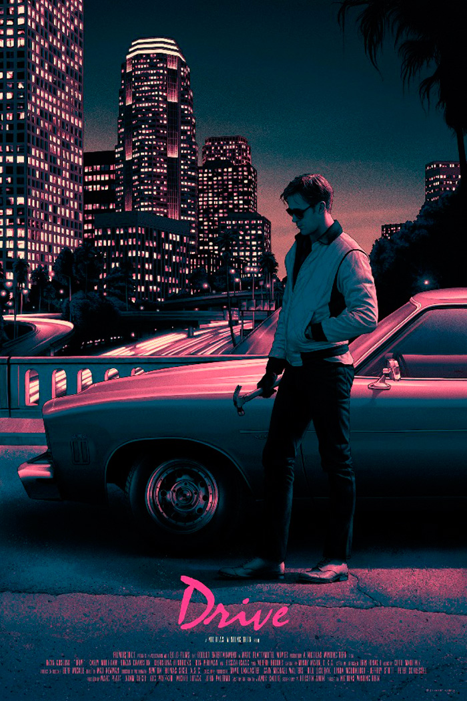
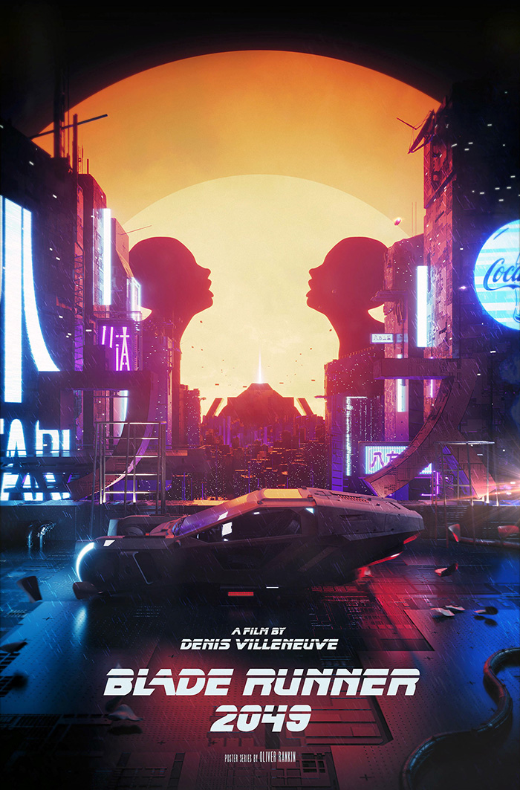
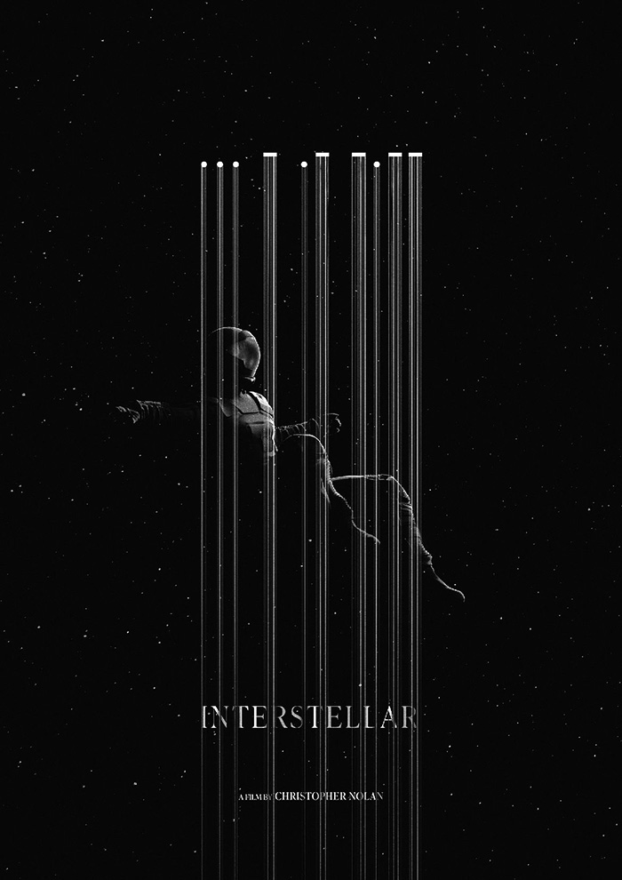
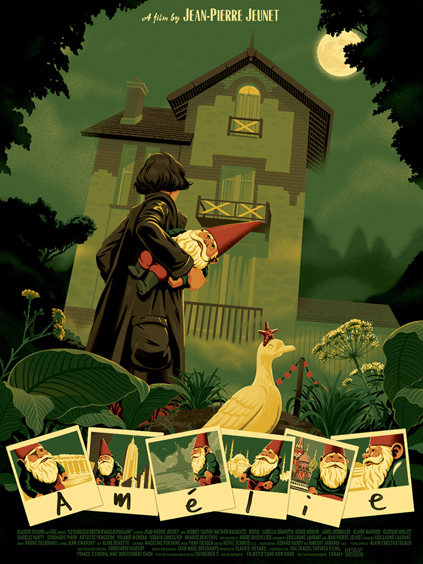
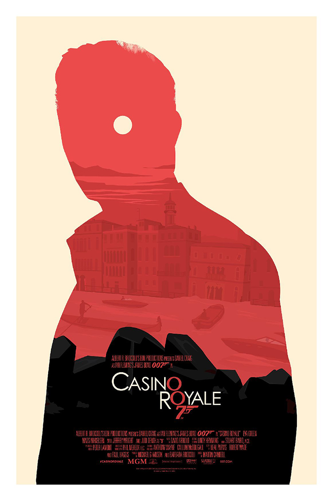
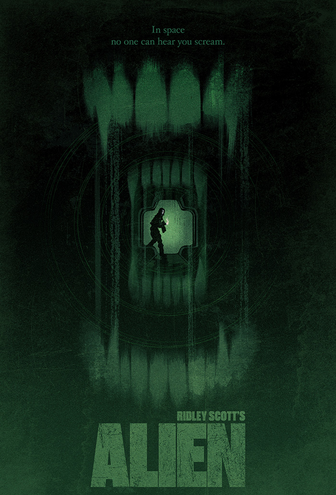

Великолепный водитель – при свете дня он выполняет каскадерские трюки на
съёмочных площадках Голливуда, а по ночам ведет рискованную игру. Но
один опасный контракт – и за его жизнь назначена награда. Теперь,
чтобы остаться в живых и спасти свою очаровательную соседку, он должен
делать то, что умеет лучше всего – виртуозно уходить от погони.

В недалеком будущем мир населен людьми и репликантами, созданными
выполнять самую тяжелую работу. Работа офицера полиции Кей — держать
репликантов под контролем в условиях нарастающего напряжения. Он случайно
становится обладателем секретной информации, которая ставит под угрозу
существование всего человечества. Желая найти ключ к разгадке, Кей
решает разыскать Рика Декарда — бывшего офицера специального подразделения
полиции Лос-Анджелеса, который бесследно исчез много лет назад.

Когда засуха, пыльные бури и вымирание растений приводят
человечество к продовольственному кризису, коллектив исследователей
и учёных отправляется сквозь червоточину (которая предположительно
соединяет области пространства-времени через большое расстояние) в
путешествие, чтобы превзойти прежние ограничения для космических
путешествий человека и найти планету с подходящими для человечества условиями.

Как полет крошечной мухи может вызвать где-то далеко мощный ураган,
так и странные и, на первый взгляд, непонятные поступки тихой и
одинокой девушки, живущей в мире своих фантазий, могут навсегда
изменить жизнь совершенно разных людей, подарив им счастье и
раскрасив окружающий мир яркими красками. Эту девушку зовут Амели Пулен.

Используя богатый шпионский арсенал, Джеймс Бонд вступает в поединок
с финансовым гением преступного мира Ле Шиффром. Но генеральное сражение
против него можно выиграть лишь силой ума, и не на поле боя,
а на зеленом сукне казино «Рояль».

В далеком будущем возвращающийся на Землю грузовой космический корабль
перехватывает исходящий с неизвестной планеты сигнал. Экипаж, в соответствии
с основными инструкциями, обязан найти и исследовать источник сигнала.
Оказавшись на планете, астронавты повсюду обнаруживают предметы, по виду напоминающие гигантские коконы.